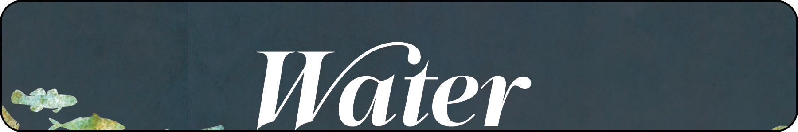

Take Action for Healthy Waterways Everyone has a role to play in restoring the health of our local rivers, lakes, and groundwater. Whether you live in town or on a farm, here are simple, powerful actions you can take:
